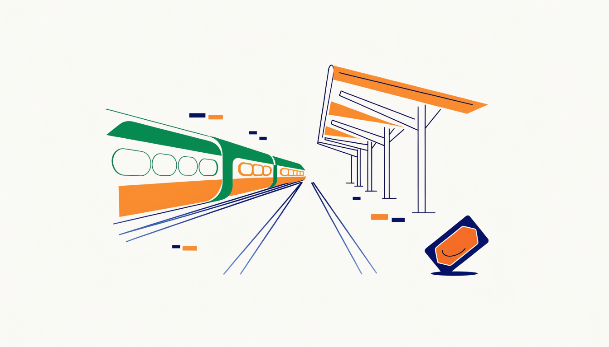
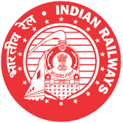

Sector guide
Railways jobs: who can apply, and how selection works
Railways recruitment explained in diagrams: which qualification unlocks which post, every selection stage, and live listings pulled from the official feed.

Not a recruiting authority. Confirm every date, fee and eligibility clause on the official notice linked from each listing.
Qualification decides the post you can target
- 10th pass — entry-level posts
- 12th pass — clerk and operating posts
- ITI or diploma — technician and engineer posts
- Graduate — officer and specialist posts
This ladder is a starting point. Confirm the exact educational clause, age limit and relaxations in the official notice before you apply.
Who can apply: qualification → post
Find your qualification on the left. Every post it unlocks is listed under it, with the pay level and what the job actually involves.
10th Pass
- Track Maintainer (Group D)Level 1Track maintenance, patrol, basic tools
- Assistant PointsmanLevel 1Signal/points operation, yard work
- Helper / KhallasiLevel 1Workshop/loco shed assisting
No ITI. Minimum 10th + age 18–33 (relaxations apply). Physical standards in notification.
12th Pass
- Commercial ApprenticeLevel 2Ticketing, goods clerk, parcel
- Traffic ApprenticeLevel 2Station ops, control, yard
- Senior Clerk-cum-TypistLevel 2Typing 30 wpm Eng / 25 wpm Hindi
- Junior Accounts AssistantLevel 2Accounts, typing, basic bookkeeping
12th pass. Typing test where stated. Age 18–33.
ITI / Diploma
- Technician (Fitter, Welder, Electrician, Diesel, AC, Machinist, Crane)Level 2ITI in relevant trade
- Junior Engineer (Civil, Electrical, Mechanical, Signal, Tele)Level 63-year Diploma in Engineering
NCVT/SCVT ITI certificate or AICTE diploma. Trade test for Technician; document verification for JE.
Graduate
- Station MasterLevel 6Any degree + Computer Based Aptitude Test (CBAT)
- Goods GuardLevel 5Any degree + document verification
- Commercial / Traffic Apprentice (Graduate)Level 6Any degree
Any recognised degree. Station Master has Computer Based Aptitude Test (CBAT).
How selection works, stage by stage
Each stage below is a real gate. Only the last one leads to an appointment letter.
-
CBT 1 (Computer Based Test 1)
Graduate level (NTPC): 100 questions in 90 minutes. Undergraduate level: 100 questions in 90 minutes. ALP: 75 questions in 60 minutes.
Qualifying in nature; the normalised score shortlists candidates to CBT 2. Negative marking 1/3.
-
CBT 2 (Computer Based Test 2)
Graduate level (NTPC): 120 questions in 90 minutes. ALP Part 2: 125 trade-specific questions.
Merit is prepared from the normalised CBT 2 score. ALP Part 2 must be qualified along with Part 1.
-
Typing / Skill Test
Typing: 30 wpm English or 25 wpm Hindi, 10 minutes. Trade test for Technician as per the published trade syllabus.
Qualifying only — does not add to merit.
-
CBAT (Station Master / Goods Guard)
Five test batteries totalling about 90 minutes: memory, attention, perceptual speed, spatial visualisation, psychomotor.
Qualifying. Only for Station Master and Goods Guard candidates who clear CBT 2.
-
Document Verification + Medical
All original certificates, caste, domicile, NOC. Medical standard A-2 / B-1 / C-1 per post.
Final appointment only after medical fitness.
How to apply, in five steps
Almost every central and state portal follows this order. Complete each step before moving on — most portals stop letting you edit once the fee is paid.
Read the official notice
Confirm qualification, age as on the notice's cut-off date, fee and the last date before you register.
Register on the official portal
Use the link on the notice, not a search result. Keep the registration number and password it gives you.
Fill the form, upload photo and signature
Enter your name exactly as on your Class 10 certificate. Upload the photo and signature in the size and format the portal specifies.
Pay the fee
Pay online and save the receipt. If you claim a fee waiver, the category certificate must already be in the prescribed format.
Download the confirmation
Save the submitted application PDF and the payment receipt. Check the portal again after a day to confirm the form was accepted.
Documents to keep ready
Scan these before the form opens. A missing certificate is the most common reason an otherwise eligible application is rejected at verification.
- Passport photograph
Recent, plain light background, within the portal's file-size limit.
- Signature
Signed in black ink on white paper, scanned at the size the portal asks for.
- Class 10 certificate
Proves your date of birth and is the usual minimum qualification.
- Degree or marksheet
Final or provisional, whichever the notice says it accepts.
- Caste or EWS certificate
In the prescribed format from the competent authority, valid on the cut-off date.
- Domicile or residence proof
Needed only where the notice reserves posts for a state or region.
- Photo ID
Aadhaar, PAN, passport or voter card — the name must match the application.
- Fee payment proof
UPI or bank receipt, kept until the admit card is issued.
Exam syllabus & pattern
Official syllabus and exam pattern for this sector. Always verify on the recruiting authority's website.
CBT 1 — Graduate level (NTPC)
100 Qs, 90 min. General Awareness 40, Mathematics 30, General Intelligence & Reasoning 30. Negative marking 1/3.
- Mathematics — Number system, BODMAS, decimals, fractions, LCM/HCF, ratio & proportion, percentages, mensuration, time & work, time & distance, simple & compound interest, profit & loss, algebra, geometry, trigonometry, elementary statistics, calendar & clock, pipes & cistern
- General Intelligence & Reasoning — Analogies, number & alphabetical series, coding-decoding, mathematical operations, similarities & differences, syllogism, jumbling, Venn diagrams, puzzle, data sufficiency, statement-conclusion, statement-courses of action, decision making, maps, interpretation of graphs
- General Awareness — Current events of national and international importance, Indian history and freedom struggle, art & culture of India, monuments and places of India, Indian polity and governance, geography and economic scene, environmental issues, general science and life science, UN and world organisations, basics of computers
- General Science — Physics, Chemistry and Life Sciences up to 10th standard CBSE level
CBT 1 — Undergraduate level (NTPC)
100 Qs, 90 min. General Awareness 40, Mathematics 30, General Intelligence & Reasoning 30. Negative marking 1/3.
- Mathematics — Same syllabus as graduate level but pitched at 10+2 standard: arithmetic, percentages, profit-loss, ratio, time-work, time-distance, simple interest, mensuration basics
- General Intelligence & Reasoning — Analogies, series, coding-decoding, odd one out, alphabetical series, syllogism, Venn diagrams, puzzle, data sufficiency
- General Awareness — Current affairs, Indian history, geography, polity, general science, sports, art & culture, environmental issues
ALP & Technician — Part 1
75 Qs, 60 min. Mathematics 20, General Intelligence & Reasoning 25, Basic Science & Engineering 25, General Awareness 5. Negative marking 1/3.
- Mathematics — Elementary mathematics, geometry, trigonometry, mensuration, measurement, ratios, percentages
- Basic Science & Engineering — Elementary physics and chemistry, engineering drawing basics, workshop calculations, IT literacy, energy conversion, environment, industrial safety
- General Intelligence & Reasoning — Analogies, series, coding-decoding, spatial reasoning, mechanical reasoning basics
ALP & Technician — Part 2 (trade)
125 Qs, 60 min, branch-specific technical questions for the trade applied under. Qualifying in a combined ratio with Part 1.
- Trade subjects — Branch-specific trade theory and practice exactly as published in the CEN for the ITI trade — e.g. for Fitter: fitting tools, measurement, workshop practice; for Electrician: electrical machines, wiring, safety
- Qualifying ratio — Part 1 and Part 2 marks are combined in the ratio published in the notification to prepare the merit list
CBT 2 — Graduate level (NTPC)
120 Qs, 90 min. General Awareness 50, Mathematics 35, General Intelligence & Reasoning 35. Merit comes from normalised CBT 2.
- General Awareness — Deeper current affairs, Indian polity and governance, Indian economy, history and culture, general science and environment, computers
- Mathematics — Higher-difficulty mensuration, time-work-distance, compound interest, algebra, geometry, trigonometry, statistics
- Reasoning — Higher-difficulty puzzles, seating arrangement, syllogism, data sufficiency, coding-decoding
Typing / Skill Test (qualifying)
Typing: 30 wpm English or 25 wpm Hindi, 10 minutes. Trade test for Technician as per published trade syllabus.
- Typing — Speed and accuracy only — no syllabus text is tested
CBAT — Station Master & Goods Guard
Computer Based Aptitude Test, about 90 minutes across five test batteries. Qualifying.
- Batteries — Memory test, attention test, perceptual speed test, spatial visualisation test, psychomotor test
When and how to prepare
- 1Start the notification date is announced — Months 1–2
Do Class 9–10 NCERT Maths and Science first: that is exactly the level of General Science and most Maths questions. Add 30 minutes of GK daily (one newspaper plus one yearbook). Finish one textbook rather than starting five.
- 2Months 3–4 — Topic-wise practice
Move to reasoning type by type, leaving puzzles for last since they take the longest. Learn Maths shortcuts for percentages, interest, time-work and mensuration. Give a chapter-wise test after every topic.
- 3Month 5 — Speed and accuracy
One full timed CBT-1 mock every week. RRB gives about 54 seconds per question, so your target is under 55 seconds. Analyse every mock for silly mistakes — fixing errors alone moves cut-off marks more than new topics.
- 4Month 6 — Revision cycle
Two mocks a week plus a small revision notebook of formulae, GK facts and your own error log. Re-read the error log every week; it is the highest-return revision material you have.
- 5Final 2 weeks — Exam simulation
Give mocks at the actual slot time so your body clock matches the exam. Stop new topics. Practise typing 15 minutes a day if the post needs the skill test, and start basic fitness because medical standards will be applied after the written stages.
Career path after joining
Promotions run on seniority plus departmental exams. The rung you enter on depends on the post you clear.
- 1 Track Maintainer / Helper (Level 1)
- 2 Senior Section Engineer / Technician Gr. I (Level 5–6)
- 3 Junior Engineer (Level 6)
- 4 Assistant Divisional Engineer / Depot Material Superintendent (Level 7)
- 5 Assistant Divisional Engineer / Divisional Engineer (Level 8–10)
What the notification does not tell you
The parts candidates usually discover too late.
-
RRB recruitment runs on centralised employment notices (CEN). A single CEN can advertise tens of thousands of posts across the 21 RRBs.
-
CBT 1 is qualifying — clearing it does not guarantee a job. Several times the number of vacancies are called for CBT 2.
-
ALP Part 2 is trade-specific: non-ITI candidates fail it even with a good Part 1 score.
-
Station Master CBAT has no textbook preparation. Only timed psychometric practice helps.
-
Medical standards are strict. Colour vision rules out signal and telecom posts; BMI limits apply to some trades.
-
RRBs publish their own panels after centralised merit. You apply to one RRB per notice.
Railways listings tracked right now
38 live listings matched to this sector. Each opens the summary and the official source link.
- Result / recruitment update UPSSSC BCG Technician 2024 Result Closes 7 August 2024
-

Result / recruitment update RRB Assistant Loco Pilot ALP CEN 01/2025 CBT II Result 2026 Closes 19 May 2025 - Result / recruitment update Railway RRB NTPC Graduate Level CBT II Result CEN 06/2025 Closes 27 November 2025
- Result / recruitment update Railway RRB NTPC 10+2 UG Level CBT II Result 2026 | CEN 07/2025 Closes 4 December 2025
- Result / recruitment update Railway RRB Junior Engineer JE CEN 05/2025 Result Closes 10 December 2025
- Result / recruitment update Railway RRB Ministerial and Isolated CEN 08/2025 Result Closes 29 January 2026
- Result / recruitment update Railway RRB Group D CEN 09/2025 Result / Score Card Closes 9 March 2026
- Admit card Railway RRB ALP CEN 01/2026 Admit Card Closes 14 June 2026
Frequently asked questions
How many Railway Recruitment Boards are there?
21 Railway Recruitment Boards (RRBs), coordinated by the Railway Recruitment Control Board (RRCB) under the Railway Board, Ministry of Railways. Each RRB covers a group of zones. Confirm the current list at rrcb.gov.in.
Can a 10th pass apply for Technician posts?
No. Technician requires an ITI/NCVT certificate in the specific trade, and ALP requires the same or a diploma. A 10th pass applies for Level 1 posts such as Track Maintainer, Assistant Pointsman and Helper.
What is the difference between RRB NTPC and RRB Group D?
NTPC (Non-Technical Popular Categories) covers graduate and 12th-pass commercial and operating posts — Clerk, Station Master, Goods Guard, Typist. Group D covers Level 1 posts such as Track Maintainer, Helper and Pointsman. They are advertised in separate notices with separate exams.
Is there negative marking in RRB exams?
Yes. One-third of a mark is deducted per wrong answer in the computer based tests. There is no negative marking in the typing test, trade test or CBAT.
Where do I find the official RRB notification?
Each RRB website (for example rrbmumbai.gov.in, rrbchennai.gov.in), the central portal rrb.indianrailways.gov.in, and the coordinator rrcb.gov.in. SarkariJobs+ links the official PDF on every listing page.
Can I choose my zone?
You apply to one RRB per notice and your preference is within that board's zone group. The merit and panel are centralised, and the posting is made by the zone from its own vacancy list.
About this guide
SarkariJobs+ is an independent tracker, not a recruiting authority. The post structure, pay levels and selection stages above are summarised from published recruitment notifications for this sector; where a notification differs, the notification wins. Listing dates, vacancy counts and fees are taken from the feed and credited to the source page.
More sectors: Banking · Defence · Employment News · IT & Technical · Judiciary · Medical & Health · Police · Revenue & Tax · SSC · Teaching · UPSC